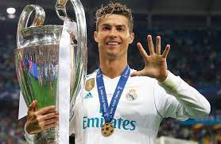
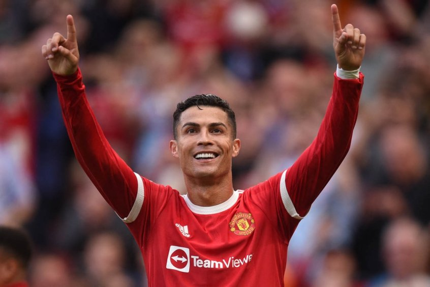

Voltar
Cristiano Ronaldo
Idade:36 anos
Jogador de futebol
Ronaldo começou a sua carreira nas categorias de base do Clube de Futebol Andorinha de Santo António. Em 1995, foi para o Clube Desportivo Nacional e o seu sucesso com a equipa levou-o a assinar com o Sporting Clube de Portugal por duas temporadas.
O talento precoce de Ronaldo chamou a atenção de Alex Ferguson, então treinador do Manchester United. Em 2003, quando tinha apenas dezoito anos de idade, Ronaldo assinou um contrato com o clube inglês, que pagou cerca de 12,24 milhões de libras esterlinas (15 milhões de euros) ao Sporting Clube de Portugal.
Já na temporada seguinte, Ronaldo ganhou o seu primeiro título com o Manchester United, a Copa da Inglaterra, e chegou à final do Campeonato Europeu de Futebol de 2004 com Portugal, no qual marcou o seu primeiro golo internacional, mas não evitou a surpreendente derrota frente à Grécia. Ronaldo foi incluído na equipa ideal desta competição.
Conquistas na carreira:
- Gols:794
- Assistencias:179
- Bols de ouro:5
- Chuteira de ouro:4
- Titulos:30
